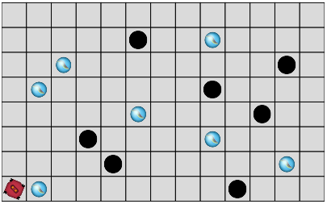
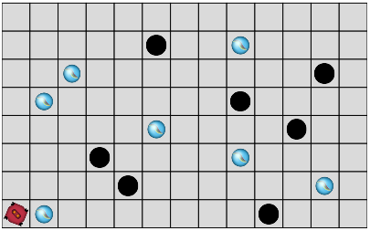
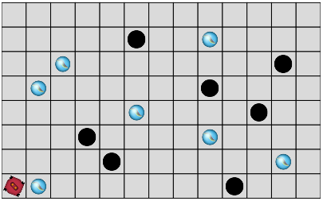

Ranger les billes 4
 

Programmer le robot pour qu'il ramasse et dépose chaque bille dans un trou.
Le robot ne peut transporter qu'une bille à la fois.
Attention : le robot ne doit pas essayer de déposer une bille s'il n'en transporte pas. Ce robot n'a pas de capteur lui permettant de tester s'il en transporte une, ni de mémoire pour s'en souvenir, donc il faut ruser.
Vous pouvez avoir besoin dude bloc si l'instruction if